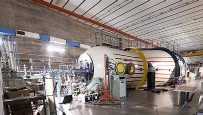
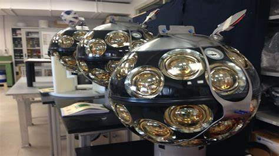
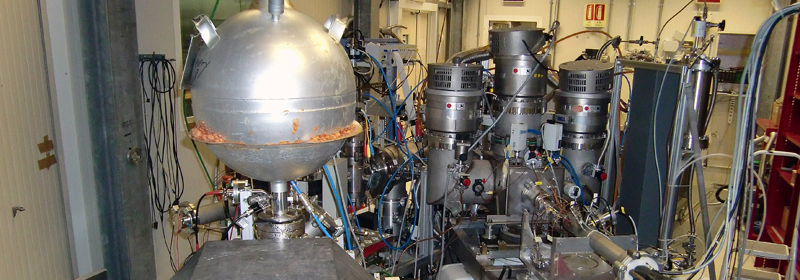
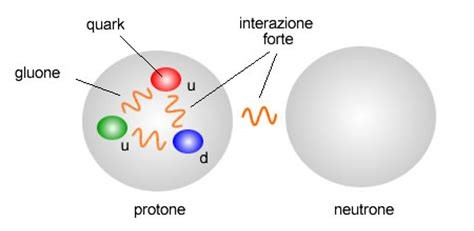
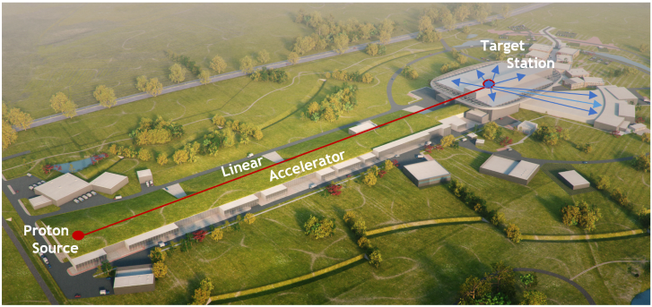

Ultimo aggiornamento: oggi
Per estendere il dominio delle nostre conoscenze gli esperimenti di fisica subnucleare esplorano due frontiere diverse e complementari dei nostri limiti sperimentali: quella dell’energia e quella della luminosità. Utilizziamo cioè gli acceleratori di particelle sempre più potenti per raggiungere un’energia delle collisioni sempre più elevate e consentire la formazione di nuove particelle (come avviene in LHC). In alternativa (o nel caso di LHC nello stesso tempo) proviamo a favorire il verificarsi degli eventi più rari e affinare in modo estremo le misure di precisione di questi eventi. In generale la fisica subnucleare richiede apparati di grande dimensione ed estrema complessità dove trovano applicazione le tecnologie più moderne nel campo dei rivelatori, dell’elettronica, dei sistemi di acquisizione dati e di calcolo. Le collaborazioni che partecipano alla costruzione di questi apparati sono composte da centinaia (nel caso di LHC, migliaia) di fisici provenienti da istituti e laboratori di tutto il mondo. Costituiscono degli esempi molto importanti di vera cooperazione internazionale in cui si incontrano i migliori fisici del pianeta e i giovani possono acquisire esperienze e conoscenze fondamentali. In questo contesto i gruppi INFN partecipano con contributi di eccellenza e con incarichi di responsabilità nei più elevati livelli decisionali degli esperimenti.
Gli esperimenti di fisica delle astroparticelle studiano la radiazione e le particelle del cosmo con esperimenti che trovano naturale ambientazione in laboratori di superficie, sotterranei, sottomarini, d’alta quota o nello spazio. Ai Laboratori Nazionali del Gran Sasso, il più grande laboratorio sotterraneo al mondo, sono oggi attivi rivelatori d’avanguardia per lo studio della materia oscura, dei neutrini e di fenomeni rari che possono essere rivelati solo nelle condizioni di ‘’silenzio cosmico’’ garantite dalla protezione della roccia. L’ambiente protetto dalla penetrazione dei raggi cosmici è inoltre favorevole a ricerche di carattere astrofisico, come lo studio dei neutrini solari e dei neutrini da supernova. La fisica astroparticellare ha poi trovato nuovi sbocchi in ambienti diversi: lo spazio, dove i rivelatori satellitari hanno accesso diretto ai raggi cosmici primari che sulla superficie terrestre sarebbero attenuati dall’atmosfera; i laboratori d’alta quota, per l’astronomia di raggi gamma di alta energia; i laboratori sottomarini per l’astronomia con neutrini di alta energia, che prima di essere rivelati dai rivelatori sul fondo del mare attraversano imperturbati l’intero globo terrestre. Infine, i fisici italiani svolgono un ruolo d’avanguardia nella rivelazione delle onde gravitazionali, sia con l’uso di antenne a barra risonante, sia con lo sviluppo dei grandi rivelatori interferometrici.
Per studiare come si aggregano i costituenti elementari della materia, i quark, quando si formano i nuclei atomici, gli esperimenti attuali sfruttano le collisioni tra particelle ad alta energia. La collisione fra un elettrone e un nucleo - come previsto dalla collaborazione INFN al Jefferson Lab - permetterà di avere una fotografia tridimensionale dell'interno del nucleo mentre la collisione tra nuclei di piombo - al CERN di Ginevra - può dare vita per pochi istanti a una bolla di plasma di quark e gluoni, lo stato dell’Universo primordiale. I meccanismi di formazione delle stelle, comparse nell’Universo solo quando si fu sufficientemente espanso e raffreddato, sono oggetto di studio nei Laboratori Nazionali dell'INFN. Ai Laboratori Nazionali del Gran Sasso, ad esempio, il piccolo acceleratore Luna è in grado di studiare la formazione dei nuclei a energie paragonabili a quelle che si trovano in una stella, molto più basse rispetto a quelle ottenute nei normali acceleratori di particelle. Acceleratori e rivelatori tra i più sofisticati al mondo sono invece installati ai Laboratori Nazionali di Legnaro e ai Laboratori Nazionali del Sud per la produzione e lo studio delle caratteristiche dei nuclei instabili. Uno degli obiettivi primari di questi esperimenti è la comprensione dei meccanismi di formazione dei nuclei pesanti, di massa superiore al ferro, in stelle di grandi dimensioni. Continua inoltre ai Laboratori Nazionali di Frascati lo studio della forza nucleare in presenza dei quark "strani", importante tra l’altro per comprendere il comportamento delle stelle a neutroni.
La ricerca teorica in ambito INFN ha un grande rilievo internazionale, come dimostrano l’imponente produzione scientifica di oltre 1200 lavori all’anno pubblicati su riviste internazionali con referee ed il significativo numero di citazioni e di presentazioni alle più importanti conferenze internazionali. Le ricerche in fisica teorica in ambito INFN sono svolte in stretta collaborazione con ricercatori di tutto il mondo e vedono uno scambio costante di studiosi fra diversi istituti accanto ad una significativa partecipazione di giovani (studenti di dottorato e/o post-doc), come dimostrato anche dall’elevato numero di tesi di laurea universitarie (circa 300/anno) e di dottorato (circa 70/anno) prodotte.
Negli anni passati l'INFN ha dato anche un notevole contributo allo sviluppo di macchine per il calcolo parallelo, per esempio nell'ambito del progetto APE (Array Processor Experiment), di particolare interesse per la ricerca nel campo delle interazioni forti e delle teorie di gauge su reticolo.
Le nuove frontiere della ricerca sui rivelatori e l’elettronica associata seguono i grandi progetti sperimentali che impegnano l’INFN. I campi di Ricerca e Sviluppo (R&D) riguardano gli acceleratori di elettroni ad alta energia e intensità, gli acceleratori di protoni e ioni per la produzione di fasci radioattivi e per le applicazioni in adroterapia. E ancora gli acceleratori per la produzione di radiazione elettromagnetica di altissima energia ed altamente coerente (X-FEL) e il progetto ESS (European Spallation Source) in costruzione a Lund in Svezia.
In campo biomedico le competenze dell’INFN hanno trovato applicazioni rilevanti nell’imaging medico, nella terapia dei tumori, nella dosimetria e nello studio dell’evoluzione cellulare e dei modelli neurologici. Inoltre indagini ambientali, analisi di reperti di interesse artistico, archeologico e storico fanno sempre più uso delle tecnologie e metodiche di misura estremamente avanzate e di elevatissima sensibilità, sviluppate nell’ambito degli esperimenti di fisica fondamentale.
Attraverso le iniziative della CSN5 l’INFN collabora con le principali istituzioni di ricerca e di controllo nazionali e regionali operanti nel settore sanitario quali l’Istituto Superiore di Sanità, il Ministero della Salute, le fondazioni e le aziende sanitarie nazionali e regionali, con gli altri enti di ricerca (ITT, CNR, INGV) e naturalmente con le Università. L’attività di trasferimento tecnologico è incoraggiata anche attraverso lo sviluppo di appositi accordi di collaborazione con le associazioni industriali di categoria (CONFINDUSTRIA e CONFAPI).
